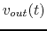
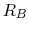
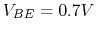

The input voltage to an RCL series circuit is
.
By adjusting the capacitance of  , a maximum current of (rms) is
achieved, and the voltage across the capacitor is measured to be
, a maximum current of (rms) is
achieved, and the voltage across the capacitor is measured to be  (rms).
Find the circuit parameters
(rms).
Find the circuit parameters  ,
,  ,
,  and the quality factor
and the quality factor  . Is this
system over or under damped?
. Is this
system over or under damped?
The output  of the transistor circuit with a sinusoidal input
is plotted. As you can see, is distorted in either of the two
cases of (a) and (b). As the designer of the circuit, you can change ,
 and/or
and/or  to avoid the distortion.
to avoid the distortion.


Hint: Draw the input and output characteristic plots of the transistor circuit to visualize how each of the two types of distortion can be avoided.
The circuit below shows a simple means for obtaining improved bias stability of the DC operating point of the transistor. As always, assume  when answering the following questions.